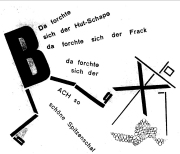
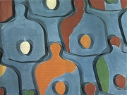

Duchamp: Fontána

Ernst: Žena ve vratké poloze
Myslíš si, že informace o počátcích dada jsou pravdivé, nebo jde o dadaistické mystifikace?
|
DADAISMUS
Dadaisté poprvé veřejně vystoupili se svou produkcí roku 1916. Šokující představení se odehrálo v Kabaretu Voltaire ve švýcarském Curychu. Na scénu připochodovalo několik umělců; první začal křičet, další zpívat, ostatní cvičili. Jindy na ohlášený recitační večer vůbec nepřišli...
Dadaisté se postavili negativně k dosavadnímu uměleckému i společenskému vývoji, vyznávali absolutní anarchii, iracionalitu a černý humor. V umělecké tvorbě upřednostňovali náhodu a nové tvůrčí postupy. Snažili se provokovat a šokovat publikum nesmyslnými výroky, skandálními výstupy nebo opovážlivými mystifikacemi. Dadaisté opovrhovali tradicí a klasickými uměleckými formami.
K samotnému názvu dada prý dospěli náhodným zabodnutím pilníku (nože) do slovníku. Hračka, koníček, ano ano v ruštině a další významy slova dada tento směr nijak necharakterizují. Dadaisté využívali náhodu i ve výtvarné tvorbě, například obrazy malovali tak, že obarvili oslovi oháňku a dali za něj prázdné plátno. Úsilí dadaistů nejlépe vyhovovala technika koláže, kdy bez ladu a skladu spojovali náhodně vybrané motivy do celku, jehož estetický účinek byl minimální. Stejně vznikaly dadaistické texty. Prostě rozstříhali noviny, jednotlivé ústřižky losovali z pytlíku (klobouku) a pak je poskládali za sebou jako verše básně. Marcel Duchamp přišel s myšlenkou ready-mades – běžné předměty (věšák, lopatu, pisoár) vystavoval v galeriích jako umělecká díla.
Ze Švýcarska se dadaismus rozšířil do Německa, USA, Francie a dalších zemí. Čelnými představiteli dadaismu byli vedle jeho zakladatelů Tristana Tzary a Hugo Balla také Němci Kurt Schwitters, Max Ernst (Dadamax) nebo Hans Arp, Francouz Francis Picabia, Američan Man Ray nebo Rakušan Raoul Hausmann. V Rusku měla k dadaismu blízko skupina OBERIU v čele s Daniilem Charmsem. Na české umění tento směr příliš velký vliv neměl. Roku 1923 se dadaistické hnutí rozpadá a většina členů pařížské dadaistické skupiny přechází pod vedením Bretona k surrealismu.
|

Man Ray: Ingresovy housle

Picabia: Adam a Eva
|
Tristan Tzara (1896-1963)

Rumunský básník Samuel Rosenstock psal francouzsky a proslavil se pod pseudonymem Tristan Tzara [cara]. Pobýval v Curychu, kde založil dadaistické hnutí, které později přenesl do Paříže. Pro dadaismus získal skupinu kolem Bretona, který později založil surrealismus. Tzarovi se původně nové hnutí nelíbilo, ale později se surrealisty úzce spolupracoval. Tzara je autorem dadaistických manifestů a sbírek Dvacet pět básní, Přibližný člověk, Samo slunce silnice rudá nebo Země na zemi.
Man Ray: Tristan Tzara
|
Tristan Tzara: Manifest dada
Manifestů dadaismu vznikla celá řada. Tzara napsal Manifest pana Antipyrina (1916), Manifest dada (1918), Manifest pana Aa antifilosofa nebo Manifest dada o bezmocné lásce a trpké lásce. Pro dadaistické manifesty je typické, že parodují samotnou myšlenku manifestu i dada. Žádná tradiční hodnota ani nová myšlenka jim není svatá.
Tzarova poezie
Tzarovou oblíbenou postavou byl pan Antipyrin. Vystupuje nejen v některých manifestech dadaismu, ale také v autorových básních, které naplňují základní postuláty dada.
|

Man Ray: Fonetická báseň
Jaké jsou hlavní myšlenky Manifestu dada?
Zkus vytvořit báseň podle Tzarova návodu.
Co znamená jméno Antipyrin?
Jaký je tvůj názor na dadaistický výrok „žádáme zavedení simultánní básně jako komunistické státní modlitby, okamžité provádění velkodadaistické propagandy se 150 cirkusy ke vzdělání proletariátu, okamžité usměrnění všech sexuálních vztahů v internacionálně dadaistickém smyslu zřízením dadaistické pohlavní centrály"?
|
Raoul Hausmann (1886-1971)
Rakušan Hausmann byl vůdčí osobností berlínského dadaismu. Honosil se titulem „dadasof“ a vydával mezinárodní revui Dada. Patřil k nejosobitějším dadaistickým hledačům. Ve svých výtvarných i literárních dílech využíval nové tvůrčí postupy. Po nucené emigraci z Německa pobýval v letech 1937 a 1938 v Čechách.
Pokus se o interpretaci básně Poselství.
Vysvětli význam slova optofónický.
Zarecituj Optofónickou báseň.
|
Raoul Hausmann
Hausmannovy texty Poselství a Optofónická báseň originálně zpracovávají dadaistický princip náhody. Obě skladby jsou zdánlivě nesmyslné, přesto ale mohou na čtenáře působit velmi intenzivně.
|
Hausmann: Vítězství dada
|
Kurt Schwitters (1887-1948)
Schwitters byl vůdčí osobností hannoverské dadaistické skupiny Merz. Tímto názvem, který byl vytržen ze záhlaví dopisního papíru „Privat und Kommerzbank“, pojmenoval většinu svých koláží a také vlastní časopis.

Kurt Schwitters a Käte Steinitz: Hastroš
Co si myslíš o Schwittersově tvorbě?
|
Kurt Schwitters
Pro Schwittersovy básně je typická originální grafická úprava. Jeho texty jsou zároveň výtvarnými artefakty.

Schwitters: Střízlivá obrazová báseň
|
Schwitters: Abeceda zezadu
z y x
w v u
ts r q
ps n m
lk i h
g f e
dc b a

Schwitters: Merz
|
Hans Arp (1887-1966)
Arp byl především výtvarným umělcem, ale psal také dadaistické básně, které nazýval „arpády“.

Arpova skulptura
|
Hans Arp
Arpova báseň Světadiv působí, jako by vznikla přesnou aplikací dadaistické metody rozstříhání novin. Slavný obrazový reliéf Vaječné prkno „vysvětluje“ tento malíř ve stejnojmenné básni.
|

Arp: Vaječné prkno
Zkus vytvořit dadaistický text nebo výtvarné dílo založené na principu náhody.
|
Daniil Charms
(1905/1906-1942)
Daniil Ivanovič Juvačev se proslavil pod pseudonymem Charms. Založil avantgardní skupinu OBERIU (Společnost reálného umění), která usilovala o dětské vidění světa nezatížené žádnými konvencemi. Svůj manifest zveřejnili roku 1928. Oberité se dostali do konfliktu se sovětskou mocí a Charms byl opakovaně vězněn. Nejprve ho odsoudili do vyhnanství v Kursku, roku 1941 byl znovu zatčen, tentokrát za „poraženecké nálady“. Zbavili ho trestní odpovědnosti a internovali na vězeňském psychiatrickém oddělení. Od té doby je považován za nezvěstného. Publikovat mohl jen zlomek textů určených dětem.
Co si myslíš o názoru oberitů, že „umění má svou vlastní logiku, která předmět nerozbíjí, ale pomáhá ho pochopit“?
|
Daniil Charms: Příběhy
Většina Charmsových textů pro dospělé čtenáře mohla vyjít až po autorově smrti. Stalo se tak díky jeho znovuobjevení v 90. letech 20. století. K dadaismu se Charms blíží absurdními a groteskními příběhy, které vynikají černým humorem a anekdotickou stručností. Na svém cyklu Příběhy pracoval více než 10 let.
„Zajímá mě jenom nesmysl. Jenom to, co nemá žádný praktický význam. Zajímá mě život jen ve svých nesmyslných projevech. Hrdinství, patos, odvaha, morálka, hygiena, mravnost, dojetí a hazard – to jsou slova a city, které nenávidím. Ale plně chápu a cením si zanícení a nadšení, inspirace a zoufalství, náruživosti a zdrženlivosti, prostopášnosti a cudnosti, zármutku a žalu, radosti a smíchu." (Charms)
|
Duchamp: Nevěsta svlékaná svými mládenci, dokonce (Velké sklo)
Který Charmsův text tě zaujal nejvíce? Proč?
Sestavte z Charmsových nebo dadaistických textů krátké recitační pásmo.
|
Internetové stránky
Dadaismus
Dadaismus
Dada
Dada
Dada
Dada
Ernst, malíř
Arp, malíř
Arp, malíř
Arp, malíř
Picabia, malíř
Duchamp, výtvarný umělec
Duchamp, výtvarný umělec
Man Ray, výtvarný umělec
Schwitters
Schwitters, zvukové nahrávky
Schwitters
Schwitters
Charms, informace
Charms
Charms
Charms, sebrané spisy
|
Doporučená četba
Arp, Hans: Na jedné noze, přel. L.Kundera, Odeon, Praha 1988
Gimferrer, P., Petrová, E.: Max Ernst, přel. E.Hodoušek, Odeon, Praha 1993
Haló, je tady vichr – vichřice! Expresionismus, přel. L.Kundera, Československý spisovatel, Praha 1969
Charms, Daniil: Bába, Volvox globator, Praha 1996
Charms, D.: Čtyřnohá vrána, Hynek, Praha 1998
Charms, D.: Dobytku smíchu netřeba, přel. M.Hnilo, Argo, Praha 1994
Charms, D.: Let do nebe, Volvox globator, Praha 1997
Charms, D.: Reakční žonglérství, Brody, Praha 1996
Kundera, Ludvík: Dada, Jazzová sekce, Praha 1983
Kundera, L.: Dada panoráma, IN: Světová literatura, č. 1-6/1966
Petránský, Ľudovít: Písmo a obraz, Pallas, Bratislava 1971
Tzara, Tristan: Paměť člověka, přel. Z.Lorenc, Odeon, Praha 1966
|
Vypracuj písemný referát o některé z uvedených knih.
Hausmann: Duch této doby
|
|